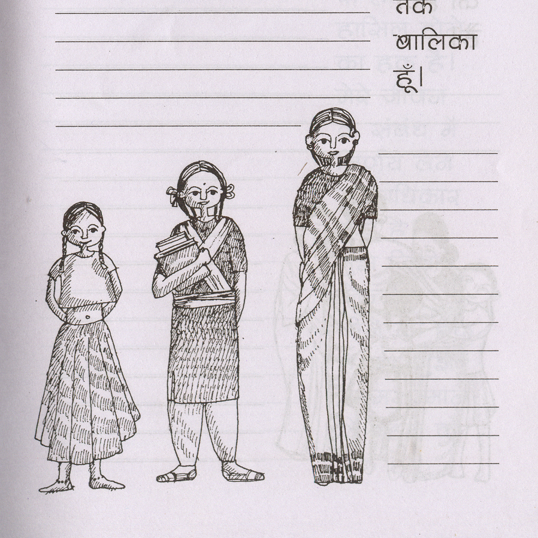

A set of multiple language diaries designed for Vacha who are working with adolescents and youth, advocating gender equality and rights.
A number of publications were designed on these topics, facilitating readability and understanding through the document design.
Design of a personal diary with the rights of the child illustrated along with poems and information on health. It created a book that belonged exclusively to the girl child, allowing them to share their thoughts while opening their minds on the equalities provided for by law.
The multilingual logo was designed over 20 years ago and is still in use.

next project:
50 years alumni exhibition
50 years alumni exhibition